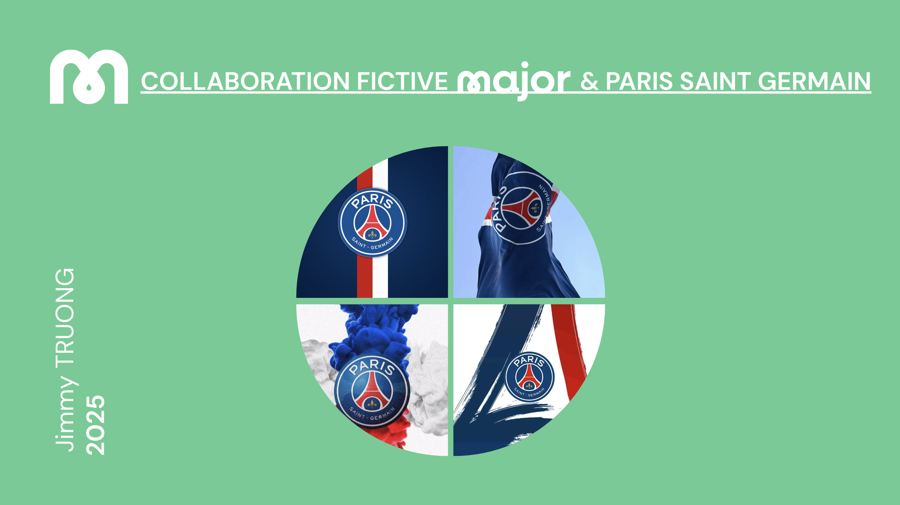
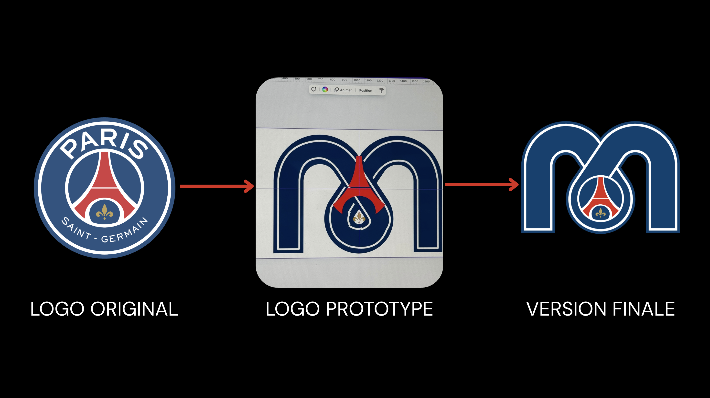
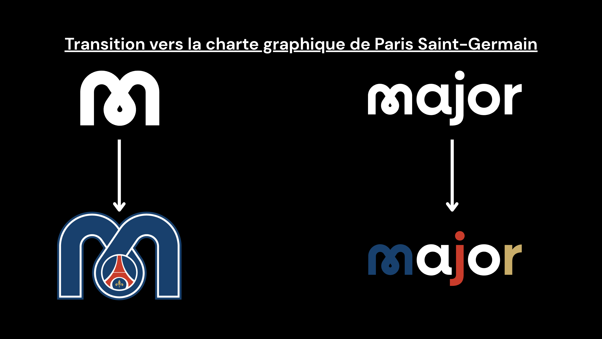
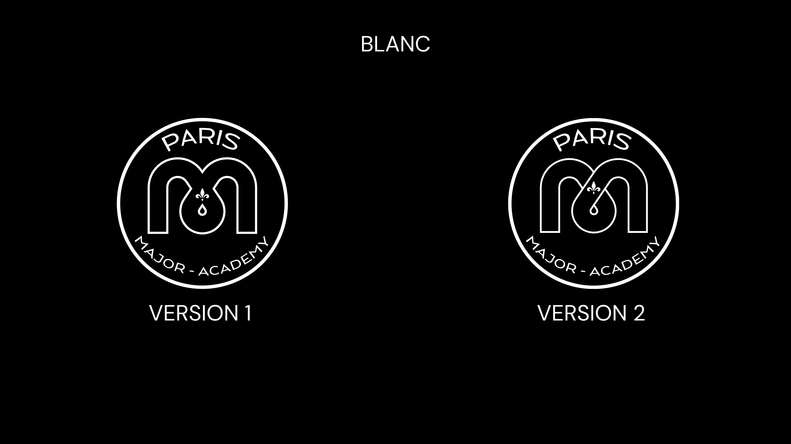
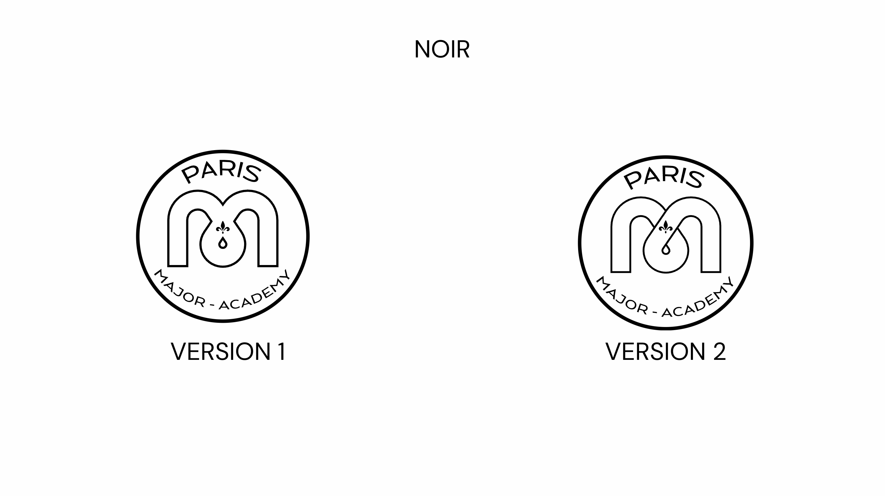
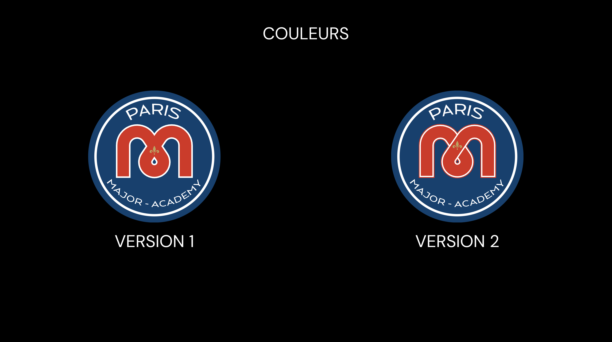
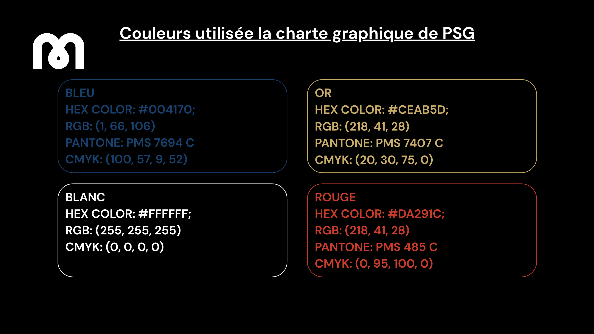
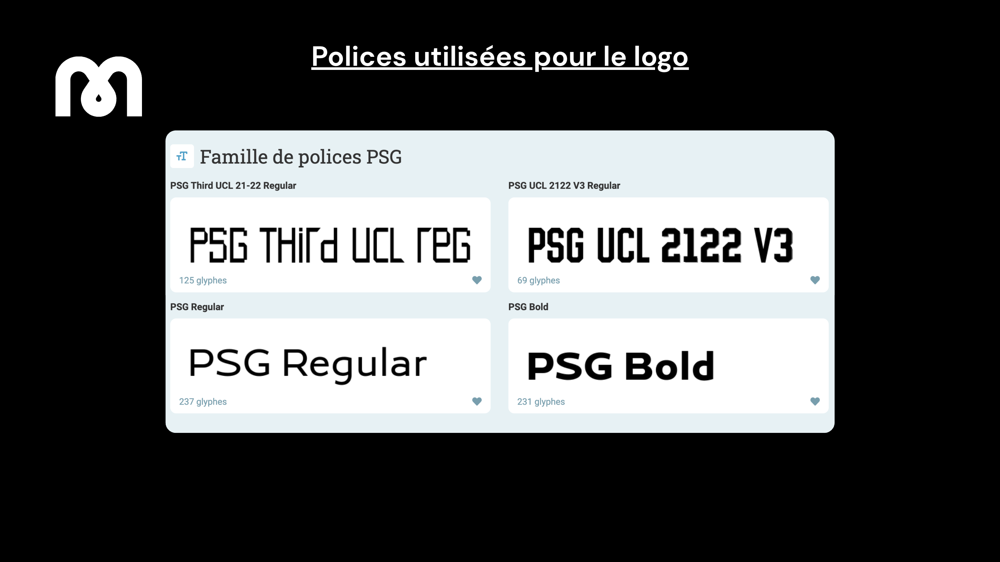

Recherche et Concept
L'objectif était d'unir l'esthétique puissante du Paris Saint-Germain avec la vision éducative de Major Formation. Cela impliquait une analyse approfondie des codes visuels de chaque entité pour créer une synergie inédite.
Dans le cadre d’un projet d’immersion fictive avec la marque Paris Saint-Germain, j’ai eu pour mission de concevoir une nouvelle charte graphique en fusion avec l’univers de l’école Major. J’ai travaillé sur la création d’une identité visuelle cohérente en développant des propositions de logos et en réalisant plusieurs mockups afin de projeter concrètement cette collaboration sur différents supports.
Voir le projet sur Figma
L'objectif était d'unir l'esthétique puissante du Paris Saint-Germain avec la vision éducative de Major Formation. Cela impliquait une analyse approfondie des codes visuels de chaque entité pour créer une synergie inédite.


01. Identité visuelle globale et déclinaison du logo fusionné.






